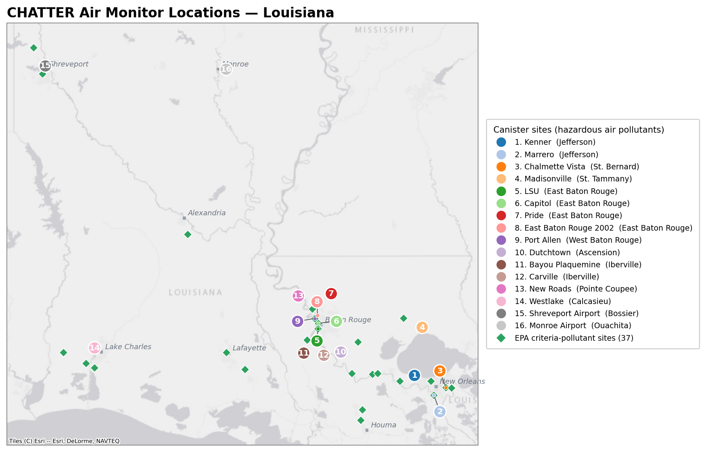
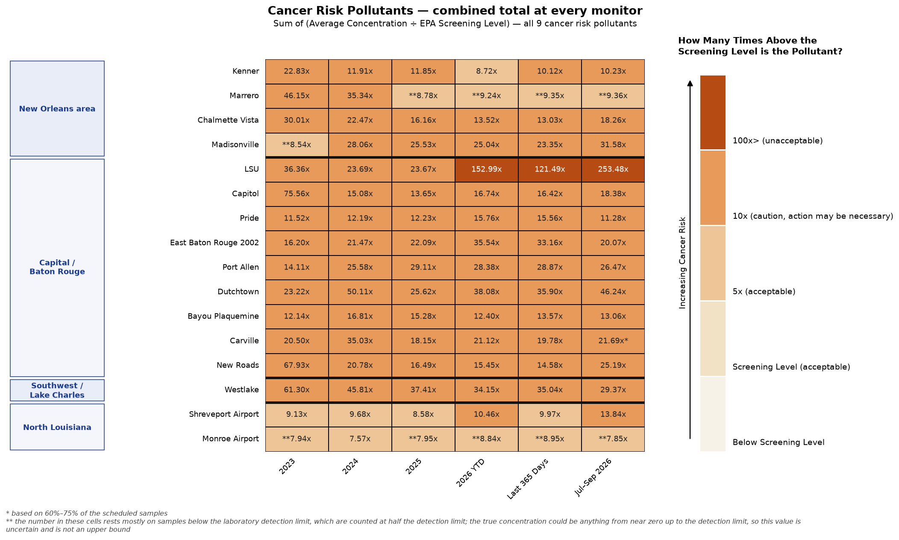
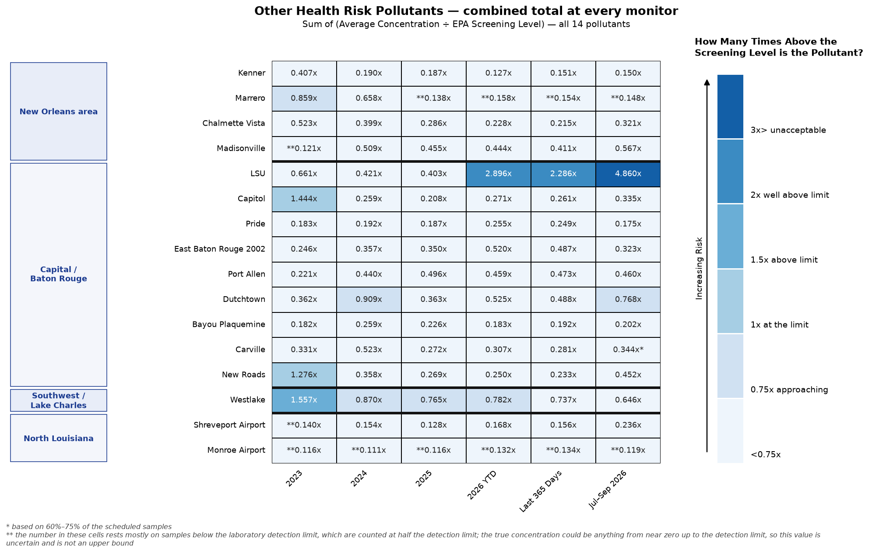
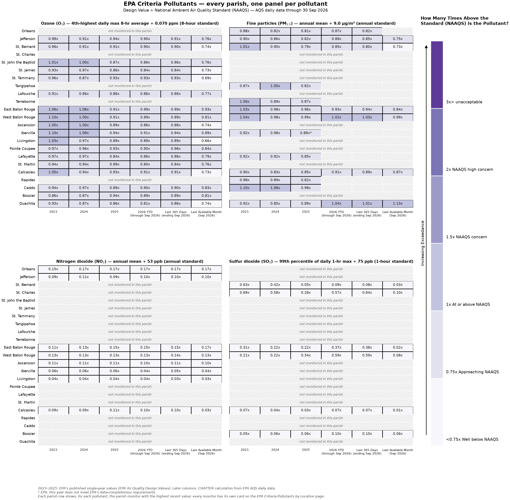

About CHATTER — a public tool that compares air pollution measured at local monitors with EPA health-based screening levels and standards, so residents can see where and when levels may be a health concern. (click to expand)
CHATTER — the Community Health Air Toxics Tracking & Environmental Report — is a tool that shows how air pollution levels change over time and what those changes could mean for people’s health. This edition covers the state of Louisiana: the sixteen Louisiana Department of Environmental Quality (LDEQ) monitoring sites across the state that measure hazardous air pollutants with 24-hour canisters — from the New Orleans area through the industrial river corridor to the Baton Rouge area, Lake Charles, Shreveport and Monroe — and the LDEQ regulatory monitors for the common EPA criteria pollutants. On this page the monitors are grouped by region — New Orleans area, Capital / Baton Rouge, Southwest / Lake Charles and North Louisiana — and the criteria pollutants by parish. Companion dashboards for individual key locations, such as the New Orleans area, will follow. While air pollution affects everyone, communities nearer industrial sources experience higher levels of hazardous air pollutants and the associated human health risk than those that are not.
CHATTER helps determine whether air pollution levels measured at local monitors may be high enough to affect human health and whether additional action may be needed to reduce exposures. Screening levels are air pollution concentrations or thresholds that scientists use to identify when long-term exposure may increase the risk of health problems. Exceeding a screening level does not mean health effects will occur, it indicates a need to take additional steps like verifying measurements or taking pollution reduction actions to protect health.
The health risks CHATTER show apply to a resident living in the area breathing air pollution for a long time.
CHATTER displays three groups of air pollutants that are monitored in Louisiana:
- Cancer Risk Air Pollutants: these are hazardous air pollutants that increase the lifetime risk of developing cancer.
- Other Health Risks Pollutants: these are hazardous air pollutants that increase the risk of other health conditions — for example heart, breathing, immune, and reproductive effects — other than cancer.
- EPA Criteria Pollutants: these are six common air pollutants regulated under the Clean Air Act for which the EPA has set National Ambient Air Quality Standards (NAAQS) because they can affect people’s health. Four of these common air pollutants are measured at LDEQ regulatory monitors across Louisiana, summarized on this page by parish, with one card per monitor on their own page.
The first two groups are of greater concern to communities living near industrial areas, where hazardous air pollutants are released. The third group consists of widespread pollutants found throughout the United States.
The hazardous air pollutants in the first two groups are measured by LDEQ with 24-hour canister samples taken every sixth day and analyzed in a laboratory, and are reported to EPA. That is different from the continuous hourly monitors used in some other CHATTER communities, so each yearly value here rests on about sixty samples rather than thousands of hourly readings; the tracker shows how many samples stand behind each value and marks the ones that rest on thinner data.
A reference map is included showing the locations of the monitors. Figures in CHATTER reports are based on air monitoring data from these locations. If you are interested in better understanding potential sources of air pollution at these locations, visit EDF’s AirTracker tool.
For more on definitions or how air monitors work, what a screening level is, how EPA sets them, and which statistics CHATTER uses, see the Frequently Asked Questions on the Data, Methods & FAQ page, which also says where the data come from, how each number is calculated, and offers a downloadable file of every value on this site.
How to read the plots on this page (click to expand)
The figures below are heat maps. On this page each figure covers the whole state at once: each row is a monitor (grouped by region) or, for the criteria pollutants, a parish, each column is a period of time, and the number in each square is the level measured at the location divided by the health-based limit, written as a multiple with an “x.” 1.0x means the level sits exactly at the limit; 0.5x is half the limit; 3.0x is three times the limit. The color legend beside each plot shows what those multiples mean. The darker the color the greater the value.
Two marks tell you when a number rests on thinner ground. A number followed by an asterisk (for example 1.72x*) means that between 60% and 75% of the scheduled samples for that period were available; periods with less than 60% are left blank rather than shown. A number preceded by a double asterisk (for example **1.20x) means that most of the samples behind it were below the laboratory’s detection limit. Such samples are counted at half the detection limit, so the number is set by the laboratory’s detection limit rather than by the air. It is not an upper bound — the true level could be anything from near zero up to the detection limit, so the value is uncertain and says more about the detection limit than about the air.
Cancer Risk Pollutants shows each monitor’s combined cancer total — its cancer risk pollutants, each compared against its Screening Level and then added together. For example, Kenner’s 2024 total reads 11.91x, in the 10x (caution, action may be necessary) band; on the Cancer Risk by Location page that splits into acrylonitrile at 6.14x, benzene at 0.91x and the other cancer risk pollutants making up the rest.
Other Health Risk Pollutants shows each monitor’s total across all of those pollutants, each compared against its screening level and then added together. Most values here sit well below 1.0x and appear in the palest shade. Seven of the pollutants new to this edition (acrylonitrile, carbon tetrachloride, chloroform, 1,2-dichloroethane, p-dichlorobenzene, trichloroethylene and vinyl chloride) have not yet been assigned a health effect and are grouped under Health effect not yet assigned.
EPA Criteria Pollutants works differently: it compares the EPA design value against the National Ambient Air Quality Standard rather than a screening level, and it covers the LDEQ regulatory monitors across Louisiana, summarized by parish. A design value is a number calculated from air monitoring data that represents pollution levels in an area and is used to determine whether the area meets an air quality standard. Below 1.0x is within the standard.
A fuller explanation is in the Frequently Asked Questions on the Data, Methods & FAQ page, and each group’s own page has a worked example.
Download the CHATTER report (PDF) Website and report last updated October 18, 2026.

Numbered circles: LDEQ canister sites (cancer-risk and other-health-risk pollutants). Green diamonds: EPA criteria-pollutant sites. The static map is generated by scripts/make_monitor_map.py from DATA/site_locations.csv.
-
New Orleans area
Kenner, Marrero, Chalmette Vista, Madisonville -
Capital / Baton Rouge
LSU, Capitol, Pride, East Baton Rouge 2002, Port Allen, Dutchtown, Bayou Plaquemine, Carville, New Roads -
Southwest / Lake Charles
Westlake -
North Louisiana
Shreveport Airport, Monroe Airport
One row per monitor, grouped by region. Each cell is the monitor’s combined cancer total for that period: the measured average level of each cancer risk pollutant divided by its Screening Level, then added together. A value below 1.00x is below the screening level; above 1.00x means the combined level exceeds it. A value preceded by a double asterisk (**) rests mostly on samples below the laboratory detection limit, so it is uncertain — the true level could be anywhere from near zero up to the detection limit, not an upper bound. Read down a column to compare monitors, or across a row to see how one monitor has changed.
To see the individual pollutants behind each total, visit Cancer Risk by Location, where every monitor has its own card.

One row per monitor, grouped by region. Each cell is the monitor’s total across all the other-health-risk pollutants for that period: each pollutant’s average level divided by its screening level, then added together. A screening level is the concentration at or below which EPA does not expect health effects. Most totals sit well below 1.00x and appear in the palest shade; a darker cell marks a monitor and period worth a closer look on the detail pages.
To see the pollutants one by one, visit Other Health Risks by Pollutants and Location.

The Clean Air Act names six criteria pollutants — common air pollutants regulated under National Ambient Air Quality Standards (NAAQS). Four of them are measured at the LDEQ regulatory monitors across Louisiana: ozone (O₃), fine particles (PM₂.₅), nitrogen dioxide (NO₂) and sulfur dioxide (SO₂).
The figure has one panel per pollutant, with every parish as a row; a hatched row means no monitor in that parish measures that pollutant. Design values are specific to a monitor, so where a parish has more than one, each pollutant’s row is taken whole from the monitor with the highest recent value. Each cell is the EPA design value — the statistic EPA uses to judge that pollutant against its standard — divided by the NAAQS. Below 1.00x is within the standard; above 1.00x is over it. Completed years are EPA’s own published single-year values; the most recent columns, which EPA has not published yet, are calculated by CHATTER from EPA’s daily data. None of these are EPA’s official three-year determinations. The criteria monitors reach EPA’s database within weeks, while the canister results behind the other two groups arrive months later, so this group runs to a later date; the last three columns say which month they end in.
How each design value is calculated, the standards used, and a card for every monitor are on the EPA Criteria Pollutants by Location page.


Louisiana CHATTER (Community Health Air Toxics Tracking & Environmental Report) was developed by StatAnalytics IDD, LLC in collaboration with Environmental Defense Fund (EDF).
Funding. This work was supported by the Wellcome Trust [grant reference number: 228257/Z/23/Z].
Data sources. Louisiana Department of Environmental Quality (LDEQ) canister and criteria-pollutant monitors, through the U.S. EPA Air Quality System (AQS); EPA Air Quality Design Values; screening levels from EPA Regional Screening Levels (RSLs); health effects from EPA’s Integrated Risk Information System (IRIS). Full citations are on the Data, Methods & FAQ page of the website.
Disclaimer. CHATTER values are screening comparisons for public information. They are not regulatory determinations, and exceeding a screening level or standard does not by itself mean that health effects will occur.
License. © 2026 StatAnalytics IDD, LLC. Content on this site and in the CHATTER report is licensed under Creative Commons Attribution-NonCommercial 4.0 International (CC BY-NC 4.0): you may share and adapt it with credit, but not for commercial purposes. For other uses, contact StatAnalytics IDD, LLC. The embedded EDF Air Tracker (© Environmental Defense Fund) and the partner logos are not covered by this license.
Suggested citation. StatAnalytics IDD, LLC, and Environmental Defense Fund (2026). Louisiana CHATTER: Community Health Air Toxics Tracking & Environmental Report. https://statanalyticsidd-gh.github.io/Louisiana/